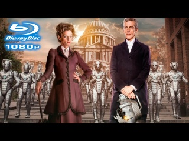
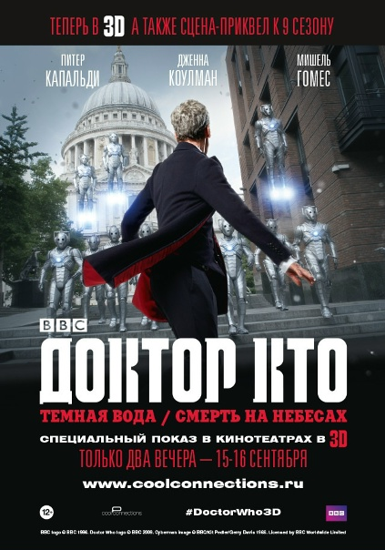
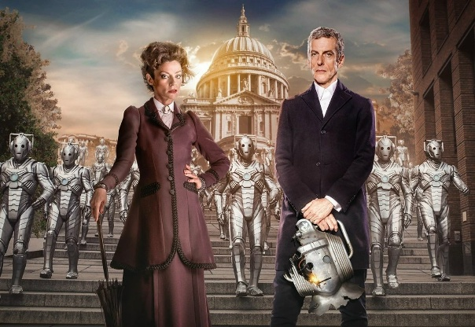
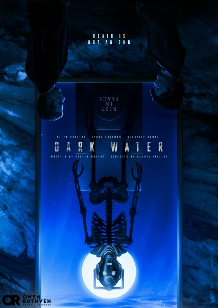

Весь 8-й сезон (12 серий)
 | Весь 8-й сезон (12 серий) |
Dark Water
Дата выхода: 1 ноября 2014
Формат: 45-минутный эпизод
  |
| Варианты озвучек: | * Разные: смотрите по инструкции |
|---|---|
| Скачивание и просмотр: |
Загадочный мир под названием «Сфера небытия». План тщательно отработан. Старые друзья и старые враги плетут интриги вокруг Доктора, и перед ним нависла невозможная дилемма.
«Смерть - ещё не конец», обещала зловещая организация под названием 3W, но, может быть, по ходу расследования, Доктору и Кларе захочется, чтобы это было не так.
Происходит непоправимое и возлюбленного Клары сбивает машина. Доктор обещает своей напарнице помочь ей спасти его. Дэнни оказывается в мире мертвых и пробует поговорить с Кларой, но та не верит ему. Доктор оказывается в странном мире, расположенном в самом центре Лондона, и обнаруживает армию киберлюдей, которые попытаются захватить Землю.

